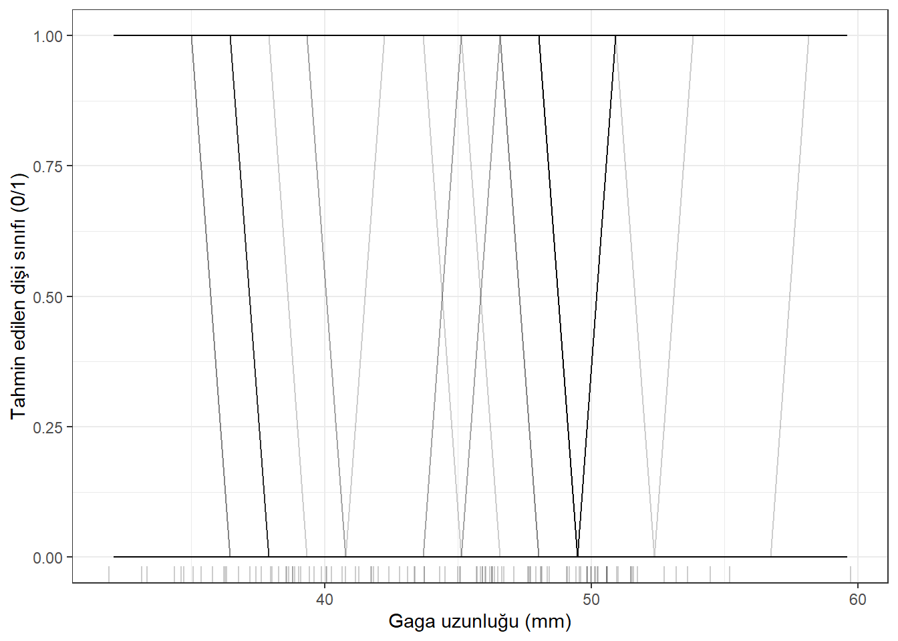
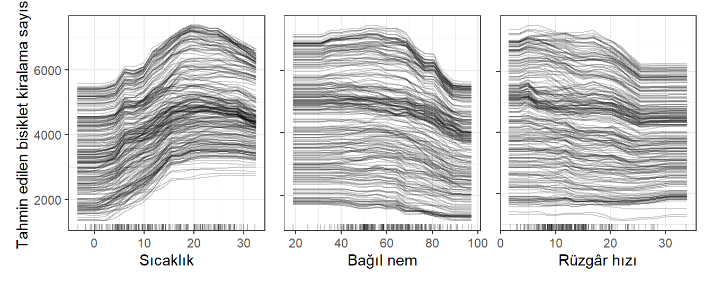
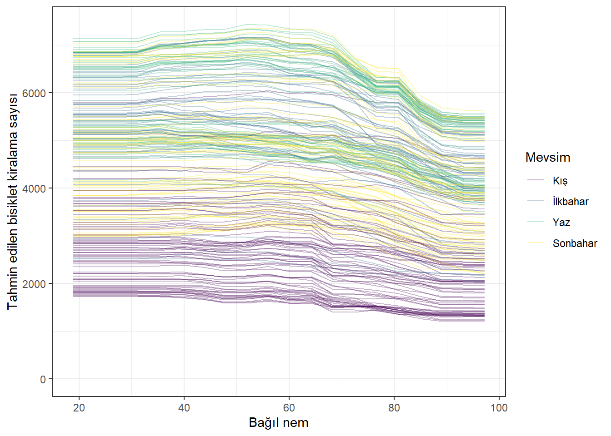
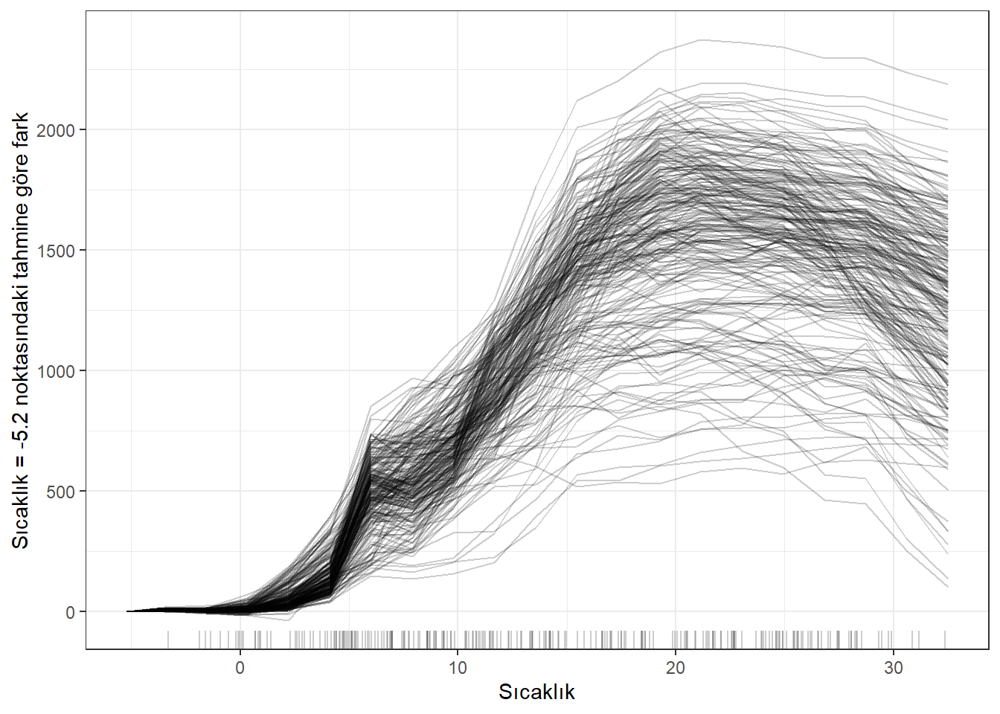

Bireysel Koşullu Beklenti (ICE)
Bireysel Koşullu Beklenti (ICE) grafikleri, bir öznitelik değiştiğinde her örneğin tahmininin nasıl değiştiğini gösteren, örnek başına bir çizgi çizer.
Bir ICE grafiği (Goldstein vd. 2015), tahminin bir özniteliğe bağımlılığını her örnek için ayrı ayrı görselleştirir; sonuç, veri kümesindeki her örnek için bir çizgidir.
Bir çizginin (ve bir örneğin) değerleri şöyle hesaplanır: diğer tüm öznitelikler sabit tutulur, ilgili özniteliğin değeri bir ızgaradaki değerlerle değiştirilerek bu örneğin varyantları oluşturulur ve kara kutu model bu yeni örnekler için tahmin üretir.
Sonuç, bir örnek için ızgaradaki öznitelik değeri ile karşılık gelen tahminlerden oluşan bir nokta kümesidir.
Başka bir deyişle ICE grafikleri, bir veri kümesindeki tüm ceteris paribus eğrilerinin tek bir grafikte toplanmış halidir.
Örnekler
Şekil 1, bisiklet kiralama tahmini için ICE grafiklerini gösterir.
Altta yatan tahmin modeli bir rastgele ormandır.
Tüm eğriler aynı güzergâhı izliyor gibi görünür; dolayısıyla bariz etkileşim yoktur.


Ama ICE grafiğini değiştirerek olası etkileşimleri de keşfedebiliriz.
Şekil 2 yine nem için ICE grafiğini gösterir; fark, çizgilerin artık mevsime göre renklendirilmiş olmasıdır.
Bu birkaç şey gösterir:
İlk olarak — ve bu şaşırtıcı değildir — farklı mevsimlerin farklı “başlangıç düzeyleri” (intercept) vardır.
Yani örneğin kış günlerinin tahmini daha düşüktür, yazın ise en yüksektir; nemden bağımsız olarak.
Ama Şekil 2, nem etkisinin mevsimlere göre de değiştiğini gösterir:
Kışın nem artışı, tahmin edilen bisiklet kiralama sayısını yalnızca hafifçe azaltır.
Yazın, bağıl nem %20 ile %60 arasında tahmin edilen kiralamalar kabaca yatay kalır; %60’ın üzerinde ise oldukça düşer.
İlkbahar ve sonbahar için nem etkileri, “kışın yataylığı” ile “yazın sıçraması”nın bir karışımı gibi görünür.
Ancak yaz ve sonbahar için çok düşük nem değerlerindeki etkileri aşırı yorumlamamalıyız.1
İpucuSaydamlık ve renk kullan
Çizgiler bir grafikte yoğun biçimde örtüşüyorsa onları biraz saydam yapmayı dene.
Bu yetmezse kısmi bağımlılık grafiği daha uygun olabilir.
Çizgileri başka bir özniteliğin değerine göre renklendirerek etkileşimleri inceleyebilirsin.
Penguen sınıflandırma görevine dönüp her örneğin tahmininin bill_length_mm özniteliğiyle nasıl ilişkili olduğuna bakalım.
Vücut ölçülerine bakarak bir penguenin cinsiyetini tahmin eden bir rastgele ormanı çözümleyeceğiz.2
Şekil 3 oldukça çirkin bir ICE grafiğidir.
Ama bazen gerçeklik budur.
Bu grafikte sınıf tahminleri gösterilir: 0 erkek, 1 dişi sınıfını belirtir. Bu nedenle çizgiler 0 ile 1 arasında sıçrar.
Merkezlenmiş ICE grafiği
ICE grafiklerinde bir sorun vardır:
Bazen ICE eğrilerinin veri noktaları arasında farklılaşıp farklılaşmadığını söylemek zordur; çünkü farklı tahminlerden başlarlar.
Basit bir çözüm, her eğriden özniteliğin seçilen referans noktasındaki kendi tahmin değerini çıkarmaktır. Böylece tüm eğriler bu noktada sıfıra hizalanır ve yalnızca referans noktasına göre tahmin farkı gösterilir.
Ortaya çıkan grafiğe merkezlenmiş ICE grafiği (c-ICE) denir.
Eğrileri özniteliğin alt ucuna sabitlemek iyi bir seçimdir.
Her eğri şöyle tanımlanır:
\[ICE^{(i)}_j(x_j) = \hat{f}(x_j, \mathbf{x}^{(i)}_{-j}) - \hat{f}(a, \mathbf{x}_{-j}^{(i)})\]
Burada \(\hat{f}\) eğitilmiş model, \(a\) ise referans (anchor) noktasıdır.
Bisiklet kiralama tahmini için sıcaklığa ait merkezlenmiş ICE grafiğine bakalım:

Merkezlenmiş ICE grafikleri, bireysel örneklerin eğrilerini karşılaştırmayı kolaylaştırır.
Bu, bir tahmini değerin mutlak değişimini değil, öznitelik aralığındaki sabit bir noktaya göre tahmin farkını görmek istediğimizde yararlıdır.
Türev ICE grafiği
Heterojenliği görsel olarak fark etmeyi kolaylaştırmanın başka bir yolu, tahmin işlevinin bir özniteliğe göre bireysel türevlerine bakmaktır.
Ortaya çıkan grafiğe türev ICE grafiği (d-ICE) denir.
Bir işlevin (veya eğrinin) türevleri, değişim olup olmadığını ve hangi yönde olduğunu söyler.
Türev ICE grafiğiyle, kara kutu tahminlerinin (en azından bazı) örnekler için değiştiği öznitelik değeri aralıklarını kolayca görürüz.
İncelenen öznitelik \(X_j\) ile diğer öznitelikler \(X_{-j}\) arasında etkileşim yoksa tahmin işlevi şöyle yazılabilir:
\[\hat{f}(\mathbf{x}) = \hat{f}(x_j, \mathbf{x}_C) = g(x_j) + h(\mathbf{x}_{-j}), \quad\text{ve}\quad\frac{\partial \hat{f}(\mathbf{x})}{\partial x_j} = g'(x_j)\]
Etkileşim yokken bireysel kısmi türevler tüm örnekler için aynı olmalıdır.
Farklılaşıyorlarsa nedeni etkileşimlerdir ve bu d-ICE grafiğinde görünür hale gelir.
\(j\) özniteliğine göre tahmin işlevinin türevi için bireysel eğrileri göstermenin yanı sıra, türevin standart sapmasını göstermek, öznitelik \(j\) içinde tahmini türevlerin heterojen olduğu bölgeleri vurgulamaya yardımcı olur.
Türev ICE grafiğinin hesabı uzun sürer ve oldukça pratik değildir.
Güçlü yönler
Bireysel koşullu beklenti eğrilerini sezgisel olarak anlamak kolaydır.
Bir çizgi, ilgili özniteliği değiştirdiğimizde bir örnek için tahminleri temsil eder.
ICE eğrileri heterojen ilişkileri ortaya çıkarabilir.
Sınırlılıklar
ICE eğrileri anlamlı biçimde yalnızca bir özniteliği gösterebilir; çünkü iki öznitelik, üst üste binen birçok yüzey çizmeyi gerektirir ve grafikte hiçbir şey görülmez.
ICE eğrileri korelasyondan zarar görür: İlgilenilen öznitelik diğer özniteliklerle ilişkiliyse, çizgilerdeki bazı noktalar ortak öznitelik dağılımına göre geçersiz veri noktaları olabilir.
Çok sayıda ICE eğrisi çizilirse grafik kalabalıklaşır ve hiçbir şey görülmez.
Çözüm: Çizgilere biraz saydamlık ekle ya da yalnızca bir örneklem çiz.
ICE grafiklerinde ortalamayı görmek kolay olmayabilir.
Bunun yalın bir çözümü vardır:
Bireysel koşullu beklenti eğrilerini kısmi bağımlılık grafiğiyle birleştir.
Yazılım ve alternatifler
ICE grafikleri R paketlerinde iml (Molnar vd. 2018) (bu örneklerde kullanılan), ICEbox ve pdp içinde uygulanmıştır.
ICE’ye çok benzer bir şey yapan başka bir R paketi condvis’tir.
Python’da PiML kullanabilirsin (Sudjianto vd. 2023).
Referanslar
Goldstein, Alex, Adam Kapelner, Justin Bleich, ve Emil Pitkin. 2015. “Peeking Inside the Black Box: Visualizing Statistical Learning With Plots of Individual Conditional Expectation”. Journal of Computational and Graphical Statistics 24 (1): 44-65. https://doi.org/10.1080/10618600.2014.907095.
Molnar, Christoph, Giuseppe Casalicchio, ve Bernd Bischl. 2018. “iml: An R Package for Interpretable Machine Learning”. Journal of Open Source Software 3 (26): 786. https://doi.org/10.21105/joss.00786.
Sudjianto, Agus, Aijun Zhang, Zebin Yang, Yu Su, ve Ningzhou Zeng. 2023. “PiML Toolbox for Interpretable Machine Learning Model Development and Diagnostics”. arXiv preprint arXiv:2305.04214.
Dipnotlar
Çevirmen notu: Kaynak metinde kutu grafiklerine atıf yapılmasına rağmen kitabın yayımlanan nem görselinde ve ilgili çizim kodunda kutu grafikleri bulunmamaktadır. Burada yayımlanan görselin düzeni korunmuştur.↩︎
Çevirmen notu: Kaynak metin bu grafiği olasılık grafiği olarak açıklasa da kaynak kodda olasılık türü seçilmemiştir. Kitaptaki görünümü korumak için burada da 0/1 sınıf göstergeleri çizilmiştir. Gerçek olasılık eğrileri için Predictor çağrısına type = “prob” eklenebilir; bu durumda eğriler kitaptakinden farklı görünür.↩︎